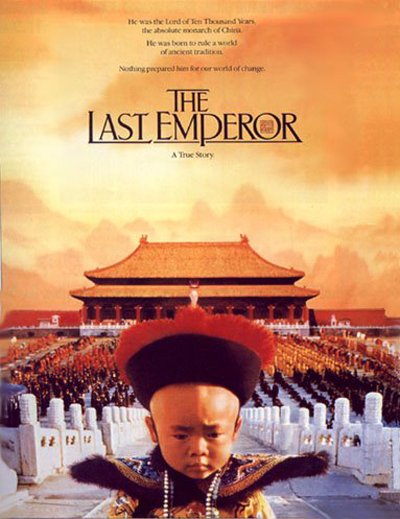

末代皇帝（The Last Emperor，1987）
一句话短评：
- “不要跟我比惨，我比你更惨”再适合这部电影不过了。
内容简介：
- 溥仪（尊龙 饰）的一生在电影中娓娓道来。他从三岁起登基，年幼的眼光中只有大臣身上的一只蝈蝈，江山在他心中只是一个不明所以的名词。长大了，他以为可以变革，却被太监一把火烧了朝廷账本。他以为自己是大清江山的主人，却做了日本人的傀儡。
- 解放后，他坐上了从苏联回来的火车，身边是押送监视他的解放军。他猜测自己难逃一死，便躲在狭小的卫生间里，割脉自杀。然而他没有死在火车上，命运的嘲笑还在等着他。文革的风风雨雨，在他身上留下了斑斑伤痕。
短评：
- 1.尽管看一群中国人在屏幕上讲英语很是奇怪，但不能否认这是部出色的电影：它与国家无关，与王朝无关，这只是一个渴望自由却不得的人的编年史；"门"的意象被反复提及，寓意溥仪被禁闭的一生；贝托鲁奇娴熟的运镜，要人命的广角自然光，美妙的配乐。 ——托尼·王大拿
- 2.一个进自己原来的宫殿还要买票的皇帝。 ——单线程青年
可播放资源：
- 哔哩哔哩 免费观看
- https://www.bilibili.com/bangumi/play/ep334037
- 优酷视频 免费观看
- https://v.youku.com/v_show/id_XMzk0ODg1NTgyNA==.html